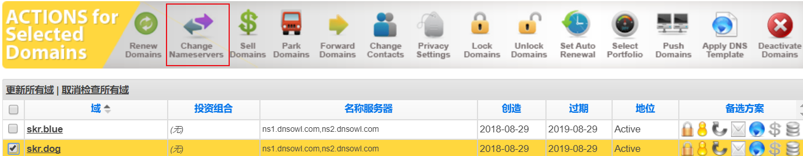
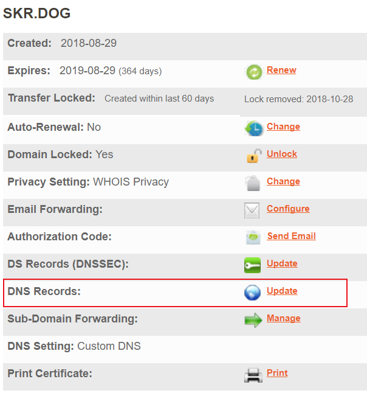
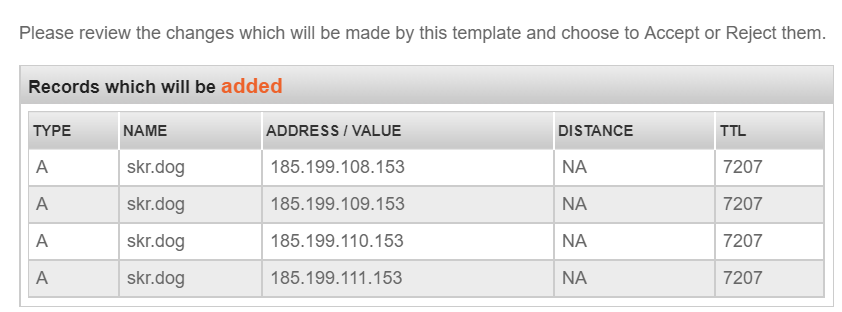
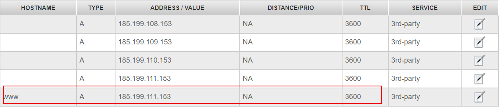
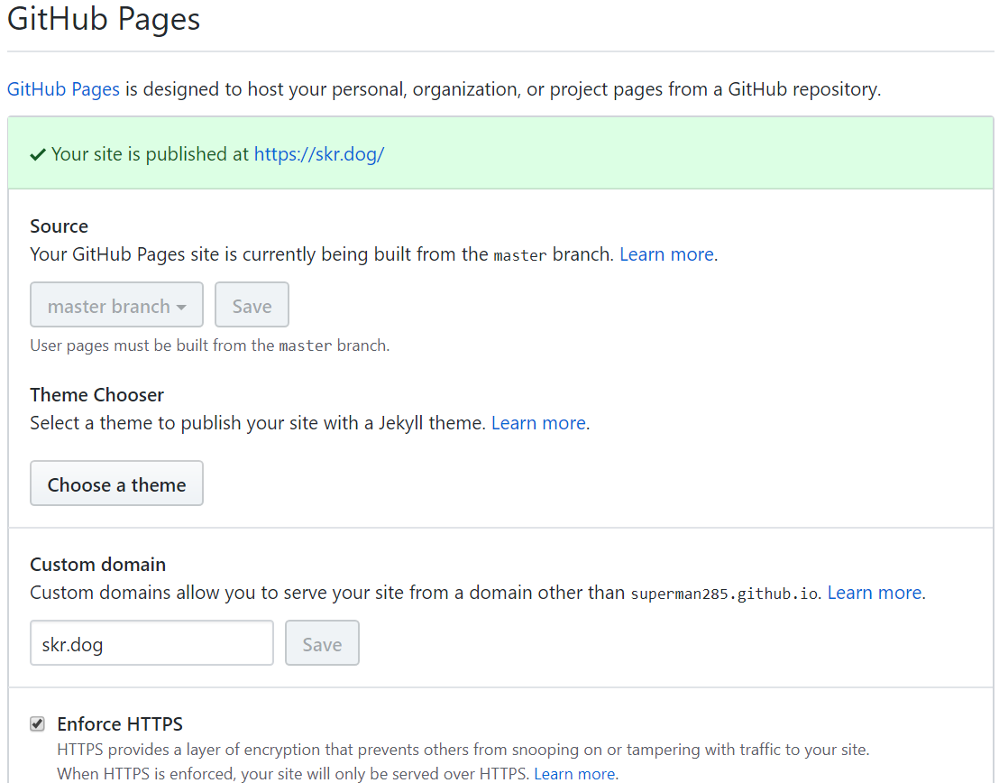
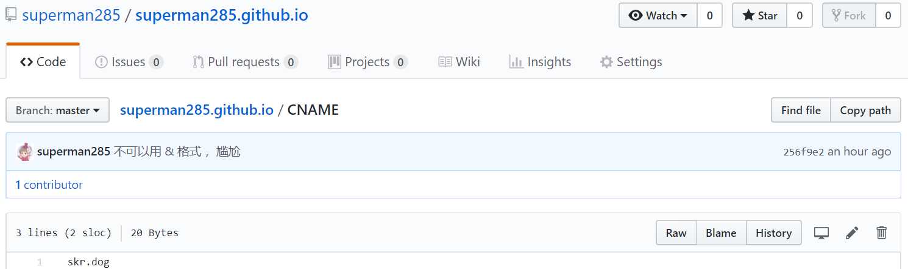
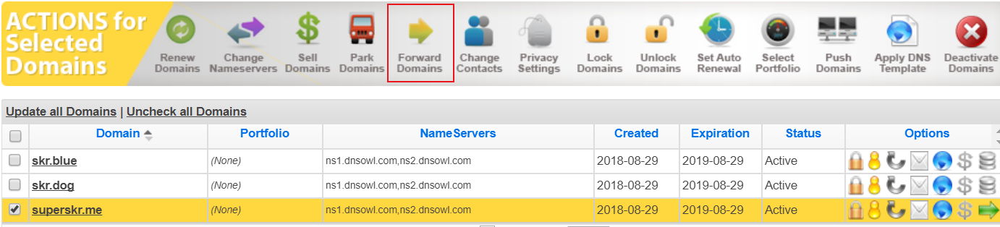
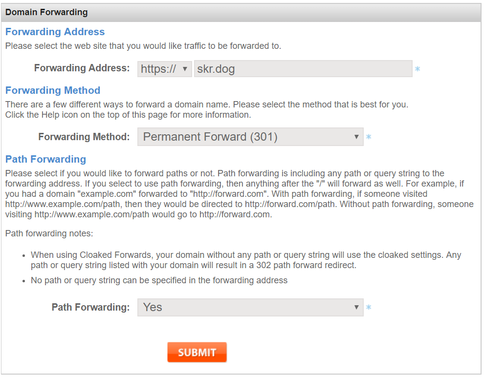
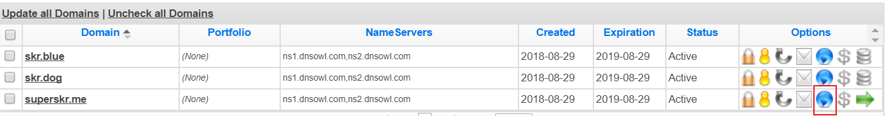
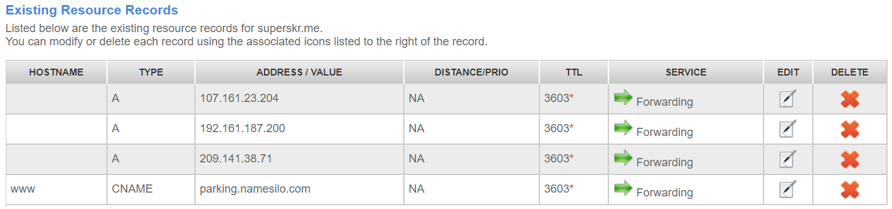

有个性！给Hexo博客设置个性域名~
博客原地址：superman285.github.io
查询博客对应的ip地址
nslookup superman285.github.io
ping superman285.github.io
域名解析设置方法
==namesilo网站设置==
第一步

第二步

第三步

点击 ==Apply Template==，此模板为github专用，点击后会智能地为你设置好ip地址。

选择==Accept==，然后 在上方生成==Existing Resource Records==
然后可以再各自单独设置TTL，namesilo最小TTL需设置为3600。
TTL大，修改解析等待生效时间长，但解析访问速度快；(不频繁更换服务器IP可设置大些)
TTL小，修改等待生效时间短，但稳定性和解析速度慢。

此处为防止www.skr.dog无法解析，加个www的保险。
实际上github pages的cname会自动帮你解析www，不加也可。(不是100%确定)
==GitHub Pages设置==
hexo博客所在仓库，进入上方菜单的设置界面，下拉到GitHub Pages设置

设置Custom domain，填入个性域名，skr.dog，点击save，会在仓库Code目录下生成一个CNAME文件(可在第二行加上www.skr.dog，不加也可)

:cherry_blossom:这样就算大功告成啦！！:cherry_blossom:
需要等待一段时间，不要心急。
然后在浏览器地址栏输入skr.dog 或者 www.skr.dog，biu一下就跳转到自己的GitHub博客了！
其他个性域名也指向博客
但是，不完美，因为我们有多个个性域名，如何让他们都指向博客呢。
GitHub Pages的CNAME只能支持一个域名的配置，无法在这儿入手。
只能从域名解析商namesilo处入手，让我们的其他个性域名用重定向的方式指向博客(指向skr.dog)。
第一步：
先进行域名解析设置-namesilo网站设置的第一步和第二步，然后先把Existing Resource Records中的几个配置Delete。
第二步：

到这个界面，点击菜单上的Forward Domains，即重定向域名。
第三步：
跳转Domain Forwarding页面后，进行如下配置

选择301方式。path forwarding为转发，为了可以正常访问网站的二级页面(如skr.dog/about)，选Yes。
然后在此界面Status状态栏为红色的processing，需要等一下才可以Active
Active后再打开DNS管理界面(点击蓝色球球和上面执行一二步后效果一样)

发现添加了四项配置，不要手贱删除，这四项的SERVICE都是Forwarding重定向。

再慢慢地等待一段时间，可能很久……
:white_flower:大功告成！！:white_flower:
这时使用其他个性域名也可以访问博客了，舒服~